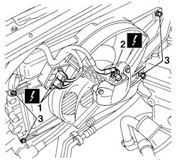
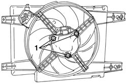
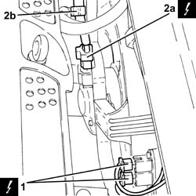
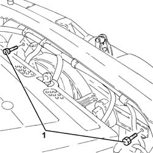
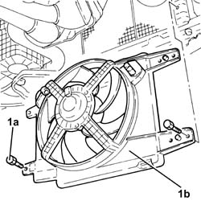

1088E10 radiator cooling fan - r + r
- Path
- Procedures > 10 ENGINE > 1088 ENGINE COOLING > 1088E coolant temperature control devices > 1088E10 radiator cooling fan - r + r
- Kind
- repair procedure (removal / refitting; the operation number is the code)
- Applies to
- engines: 1.6 TS , 1.8 TS, 2.0 JTS, 2.0 JTS; all production periods
- Interactive page
- https://sloeber94.github.io/elrnDB-a156/en/#/3237713
Applies to: engines: 1.6 TS , 1.8 TS; all production periods
 Removing
Removing
 Refitting
RefittingDisconnect battery negative pole.
 | Name | Connector |
|---|---|---|
- | Battery |
1. Disconnect the two electric connections from cooling fan resistor.
| Name | Connector |
|---|---|---|
1 | Engine fan adjustment resistor - 1 |
2. Disconnect electric connection supplying cooling fan.
| Name | Connector |
|---|---|---|
2 | Engine fan motor - 1 |
3. Unscrew the four fixing screws of radiator cooling fan mount and remove it.

Applies to: engines: 1.6 TS , 1.8 TS; all production periods
1. To disjoin cooling fan together with its fan from cooling fan mount screw the three fixing nuts.

Applies to: engines: 1.6 TS , 1.8 TS; all production periods
Refitting
RemovingPlace cooling fan complete with fan into cooling fan mount seating and screw the three fixing screws.
Place mount on engine radiator and screw the four fixing screws.
Connect electric connection supplying cooling fan.
| Name | Connector |
|---|---|---|
- | Engine fan motor - 1 |
Connect electric connection of cooling fan resistor.
| Name | Connector |
|---|---|---|
- | Engine fan adjustment resistor - 1 |
Connect battery negative pole.
Applies to: engines: 2.0 JTS, 2.0 JTS; all production periods
Removing
RefittingPosition the vehicle on the ramp.
Ensure that the ignition key is in OFF position, then disconnect the negative battery terminal.
| Name | Connector |
|---|---|---|
- | Battery |
1. Disconnect the electrical connections from the engine cooling fan resistor.
| Name | Connector |
|---|---|---|
1 | Engine fan adjustment resistor - 1 |
2. Disconnect the electrical connection from the radiator cooling fan motor (2a) and release the electrical wiring from the band (2b).
| Name | Connector |
|---|---|---|
2a | Engine fan motor - 1 |

Applies to: engines: 2.0 JTS, 2.0 JTS; all production periods
1. Undo the upper bolts fixing the radiator cooling fan.

Applies to: engines: 2.0 JTS, 2.0 JTS; all production periods
Proceed with removal 7055B54 under-engine guard - r r .
1. Undo the lower bolts (1a) and remove the radiator cooling fan (1b).

Applies to: engines: 2.0 JTS, 2.0 JTS; all production periods
Refitting
RemovingPlace the radiator cooling fan back in its housing and secure it using the lower bolts.
Proceed with refitting 7055B54 under-engine guard - r r .
Tighten the upper bolts fixing the radiator cooling fan.
Connect the electrical connection to the radiator cooling fan motor and secure the electrical wiring to the band.
Connect the electrical connections to the resistor for the engine cooling fan.
Connect the negative (-) battery terminal.
Remove the car from the ramps.
Topics linked from this page (4)
- 7055B54 under-engine guard - r r
- A1B Battery ( BATTERY NEGATIVE )
- N11 Engine fan motor - 1
- O10 Engine fan adjustment resistor - 1
Topics that link to this page (11)
- D36 ENGINE COOLANT OVERHEATING SIGNALLED BY THE INSTRUMENT / WITH VISIBLE VAPOUR VENTING
- D37 ENGINE COOLANT OVERHEATING SIGNALLED BY THE INSTRUMENT / WITHOUT VISIBLE VAPOUR VENTING
- 1004B10 power unit with manual gearbox - r + r
- 1004B12 power unit with manual gearbox - r+r for versions with a/c
- 1004B24 power unit with manual gearbox with hydraulic selection - r r
- 1020D38 flywheel side oil seal - replace
- 1024B10 engine flywheel - r + r for versions with manual gearbox
- 1088A24 engine cooling radiator - r r for air conditioned versions
- 1088B20 engine cooling radiator - r + r
- 1810A20 clutch - r + r
- 2110A10 manual gearbox and differential - r + r